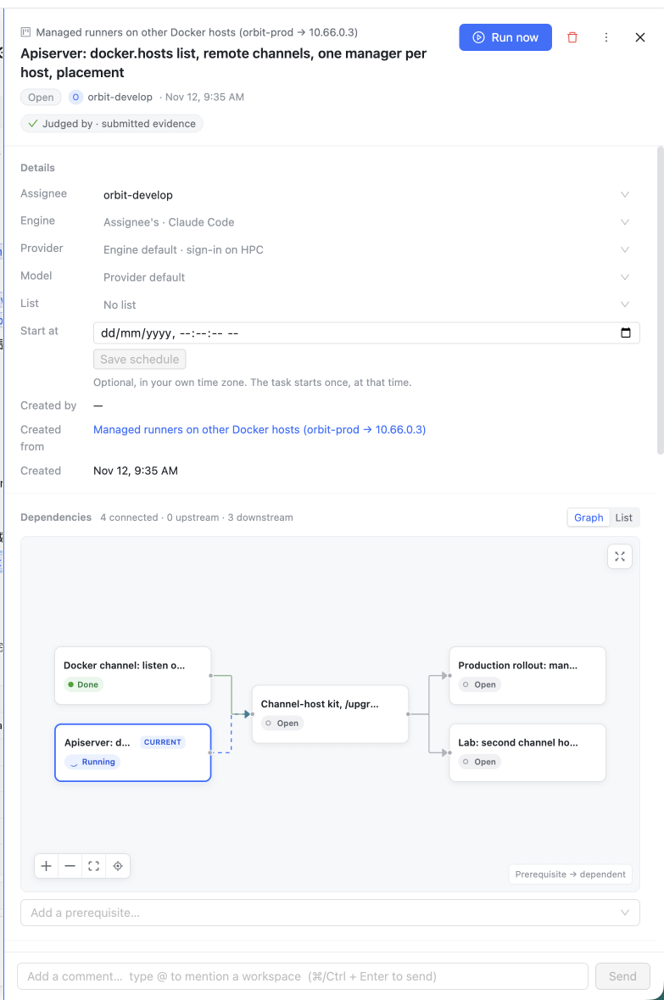
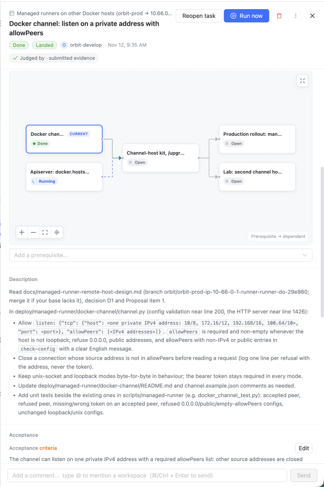
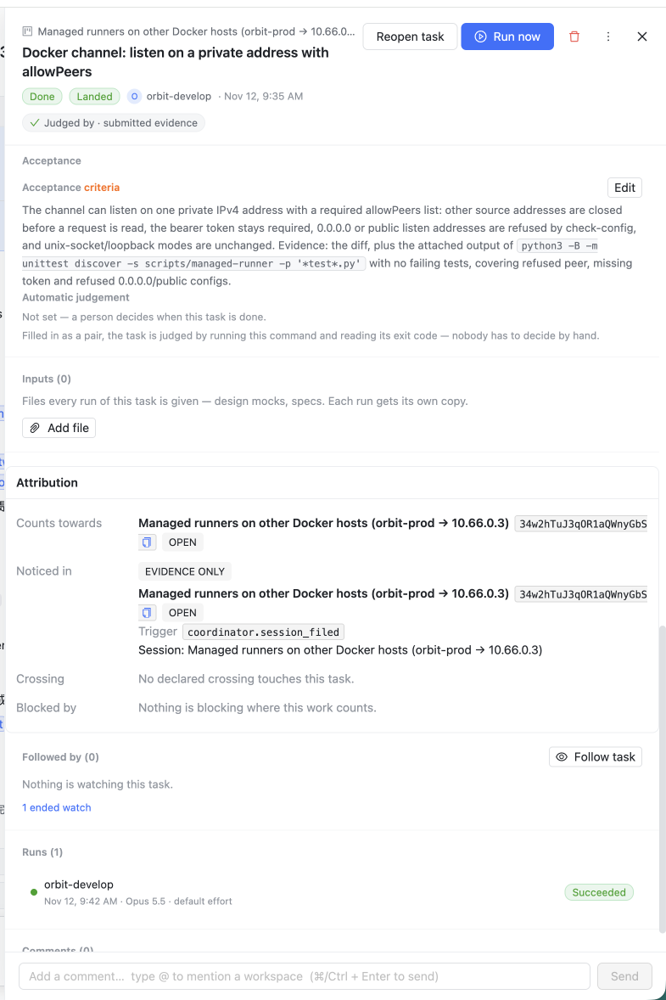

你给的三张截图（线上真实数据：「Apiserver: docker.hosts list…」Running，「Docker channel: listen on a private address…」Done）。橙色编号对应右侧说明。核心判断：这一页现在是一张「配置表单」，而不是「一个 agent 在为你做的一件事」 — 首屏是引擎/模型/排期，agent 正在做什么、交付了什么、凭什么算完成，全都看不到或者埋在最底下。
人定信封，agent 在信封内自由— Assignee / Engine / Provider / Model / List / Start at 是信封，定一次、很少再看，不该占首屏。
人只对目标、风险、预算和不可委托授权负责— 页面首先要回答：目标（验收标准）是什么、现在要不要我拍板。
Nothing blocks in silence（product-intro）— 等人的时候要大声说出来；没有等人时不要制造噪音。
You supervise a project instead of supervising a prompt— 任务是计划里的一个节点：它解锁了谁、被谁卡住，用一句话讲清楚。
Calm, precise, capable, and honest about boundaries（project-maturity）— 一个事实只说一遍、不自相矛盾、不晒内部 id。

1 2 3 4 5 1 10
2 9 6 7
6 8 8 8 11 12Open，同一页依赖图里自己的节点写 Running。人要自己判断该信哪个。违反 ⑤。dd/mm/yyyy 空日期框 + 置灰的「Save schedule」+ 一行说明，三行给一个 99% 任务不用的功能。34w2hTuJ3q…、触发器 coordinator.session_filed、全大写 OPEN / EVIDENCE ONLY、「No declared crossing touches this task」「Nothing is blocking where this work counts」两行空状态。实际只有一句话：「由项目协调者从 X 会话建立，计入项目 X」。task_progress_report 的 phase/current/total 已有数据，任务页没用上）。新顺序按「人打开任务时依次想知道的事」排：① 现在什么状态、要不要我 → ② agent 在做什么 / 交付了什么（附凭据）→ ③ 目标与完成标准 → ④ 在计划里的位置 → ⑤ 信封（谁、用什么跑）折叠成一行 → ⑥ 经过（runs + 评论 + 判定合成一条时间线）。蓝色编号对应下方说明。界面文字一律英文；任务数据取自你的截图，进度步骤、证据内容、commit 号为示意。
Running · 7m / Done + Landed on main · 7c41e9a），后面紧跟执行者、模型/机器、判定方式。头部的 Open 与图里 Running 的矛盾消失（解 1、9）。Open the run；Done → View changes；Needs you → 决定按钮放在黄色横条里；Open 且没在跑 → Run now；Failed → Run again。Reopen / Run again / Copy link / Delete 收进 ⋯（解 2）。task_progress_report（phase/current/total/message）画步骤与进度条，加最近活动时间、已花费；正在改的文件取自 run 的最新工具调用。没报告过进度的 run 只显示头一行（解 12）。Graph 原地展开（现有 TaskDependencyGraph 不动）；加前置的输入框也收进 Graph 展开后（解 5）。Edit 原地展开成今天的五个下拉 + Start at + Input files（见 3/3 的 E）。空的 List / 排期 / Inputs 合成一行灰字（解 3、4、11）。To the run：发给正在跑的 agent（同时记在任务上）；没有 live run 时是普通 Comment。下拉可切换（解 10）。「Nothing blocks in silence」：只有真的在等人，页面顶部才出现黄色横条，横条里就是要做的决定，不用往下找。没有等人时，这一条不存在。
同一条横条承载所有「等人」：run 停在审批卡上（Allow / Deny + 原命令）、evidence 等所有者判定（上图）、run 失败（Run again / Open the run + 失败一句话）、配额暂停（何时自动恢复，无按钮）。多个同时存在时按「授权 > 判定 > 失败」排，只展开第一个。等协调者判定的 evidence 不出横条：那不是你的决定，只在 Now 里写「Waiting for the coordinator」。
| 区块 | Open（未跑） | Running | Needs you | Done | Failed / Cancelled |
|---|---|---|---|---|---|
| 主按钮 | Run now | Open the run | （在横条里） | View changes（无改动则无） | Run again |
| 黄色横条 | — | 仅审批卡 | 决定本身 | — | 失败原因 + Run again |
| Now / Delivered | —（显示「Not started · waits for X」） | Now：进度 + 当前动作 | Now：waiting for you | Delivered：证据 + 落地 | Last run：失败一句话 + 最后进度 |
| Done means + Brief | 始终显示；Brief 折叠 4 行。判定方式只在 Done means 下面说一次（删去「Automatic judgement: Not set」那段，改到 Edit 里） | ||||
| In the plan | 无依赖时整块不显示，⋯ 里有「Add prerequisite」；有依赖时一行链 + 一句话，Graph 原地展开 | ||||
| Runs with | 始终一行芯片，Edit 原地展开；运行中修改提示「applies to the next run」 | ||||
| Activity | 建立 / 开跑 / 进度阶段 / 证据与判定 / 落地 / 评论 合一，新的在上；Runs、Attribution、Followed by 三个独立区块取消 | ||||
| Composer | 有 live run 时默认「To the run」，否则「Comment」 | ||||
src/web/src/components/TaskDetailPanel.tsx（区块顺序、状态行、主按钮、⋯ 菜单、Runs with 折叠）· TaskProgressBlock.tsx（复用进 Now）· TaskDependencyGraph.tsx / TaskDependencyList.tsx（一行链 + 原地展开）· TaskAttributionCard.tsx（并入 Activity，一行化）· TaskScheduleEditor.tsx / TaskInputs.tsx（进 Edit）· 新增 Delivered / Needs-you 横条组件（读 task_evidence_list 已有数据）· index.css。服务端：Now 的「正在改的文件」与「$ so far」若任务接口里没有，需要在 task 读接口加两个字段——实现前先核对。